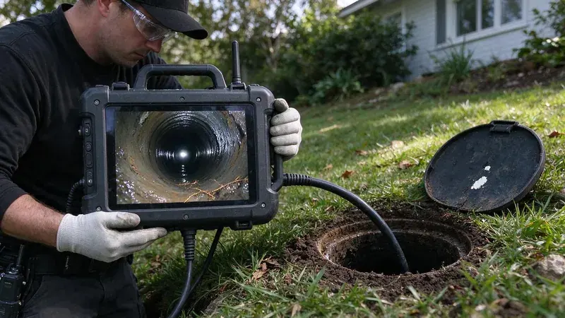

What a Home Inspection Does Not Cover
A general home inspector runs water in the sinks, flushes toilets and checks for leaks under cabinets. What they usually do not do is look inside the main sewer line. That line runs from the house to the city main or the septic tank, often 40 to 100 feet underground, and if it is broken the repair can cost more than a new roof, which lands on the new owner the day the deed records. The scope takes about an hour.
Running water for ten minutes proves very little. Cracked or root-filled pipe often handles a test flush without trouble. Problems show up once a family of four starts doing laundry and taking showers every day, usually in the first few months after move-in. A house that sat empty is the hardest to judge.
Common Sewer Line Problems in Virginia Homes
Expansive clays in some areas swell when wet and shrink when dry, which can crack foundations and shift buried sewer lines.
Roots are the most common thing we find on a pre-purchase scope. They squeeze into the joints of clay and cast iron pipe and spread into tangles that snag paper. Bellies, sections that have sagged and hold water, are next, followed by offset joints where one piece of pipe has shifted out of line with the next one. The camera picks up every one of them.
Grease and scale show up on older lines as well. Heavy buildup shrinks the opening and snags paper at each joint. A seller who had the line cleaned the week before listing can make a bad pipe look better on paper, so ask when the last cleaning was and read the video for fresh cutter marks on the walls. Fresh scrape marks tell a story.
Housing in Virginia spans centuries, from historic homes with cast iron and galvanized pipe to newer subdivisions plumbed with PEX.
The age of the house tells you what pipe to expect. Older homes, roughly pre-1980, tend to have clay or cast iron, with Orangeburg in some. Cast iron in its fifties and sixties commonly shows heavy scale or channel rot, where the floor of the pipe has worn through, while PVC from newer builds usually looks clean unless it was bedded poorly. Request records of earlier repairs from the seller.
What Skipping It Can Cost
Sewer line replacement is one of the most expensive repairs a house can need, right alongside a foundation or a roof. A line that runs under a driveway or a big tree costs more again. Trenchless lining or bursting often brings the price down and saves the yard, but nobody wants to learn about a collapsed lateral two weeks after closing, when the seller is no longer part of the conversation. Before closing, a bad line is something you can negotiate.
A camera report gives you options. You can ask the seller to repair the line or credit the cost at closing. Homeowner policies generally exclude gradual deterioration and root damage to a sewer line, so the cost lands on the buyer if nobody looks before the papers are signed. Walking away is an option too.
Septic homes need an extra look. The camera can follow the line to the tank inlet and show whether the baffle is intact. A full septic inspection with a pump-out is a separate service, but the camera pass tells you whether the pipe between house and tank is sound before you spend money on the tank itself. Ask for both on a rural listing.
When to Call a Professional
Book the scope during your inspection window, ideally in the first few days so there is time to get a repair quote if the video shows trouble. The plumber runs the camera from a cleanout or pulls a toilet if there is no cleanout. FBN Plumbing records the full run, marks the footage and depth of any defect with a locator, and sends you the video with a written summary you can hand to the seller, and the scheduling line is (434) 230-6997. Tell your agent before the appointment.
What a Good Camera Inspection Includes
Look for a report with video, not a pass or fail checkbox. A good scope covers the full lateral from the cleanout to the city tap or septic tank. Footage markers and a locator reading at any problem spot let a second plumber or the seller's contractor quote the same repair without rescoping, which saves days during a tight closing schedule. Save the video for future reference.
Owners of older homes can use a scope too. Running a camera every few years on an older line spots root intrusion early. If the house has had two or more main line backups in a year, the line almost always has a defect worth seeing on video, and cleaning it again without looking just resets the clock. Look first, then choose the fix.
Need a licensed plumber in Virginia?
FBN Plumbing answers 24/7 and offers same-day service across Virginia.